Чаты и каналы используются для выстраивания внутренних коммуникаций в компании. Однако между ними есть различия:
- Каналы — это инструмент для информирования сотрудников о важных событиях в жизни компании;
- Чаты — используются для личного взаимодействия между сотрудниками, своевременного обмена важными данными, координации деятельности, быстрого решения вопросов.
Создать чат
Есть несколько способов начать беседу с коллегой в чате:
- Воспользоваться строкой поиска. Перейдите в раздел Сообщения. В строке поиска по каналам и чатам введите несколько первых букв имени и выберите человека из выпадающего списка.
- Нажать на имя пользователя. В #ленте новостей, канале или карточке задачи нажмите на имя пользователя и выберите опцию Написать сообщение.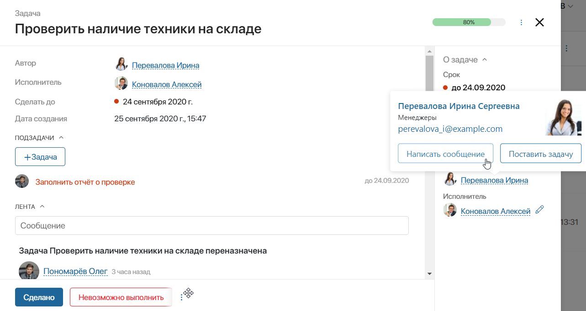
Все ваши личные чаты отображаются в разделе Сообщения. Чаты, в которых недавно велась переписка, находятся прямо под #лентой.
После отправки сообщения в чатах отмечаются значками:
- 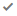 — доставленное сообщение;
- 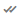 — прочитанное сообщение.
В групповых чатах сообщение отмечается прочитанным, если его просмотрел хотя бы один из участников.
Действия с сообщениями в чатах
В контекстном меню сообщений в чатах доступны следующие действия:
- Поставить реакцию — выбранный смайл будет отображаться под сообщением. Автор комментария получит push-уведомление о вашей реакции;
- Скопировать — сохранить сообщение в буфер обмена;
- Редактировать — измените отправленное вами сообщение. Отредактированное сообщение помечается в чате значком карандаша;
- Цитировать — дополните своё сообщение или ответьте на сообщение собеседника;
- Пометить далее непрочитанными — отметьте полученные сообщения непрочитанными, чтобы вернуться к беседе позже. Рядом с названием чата отобразится красный счётчик;
- Переслать — поделитесь сообщением и комментарием к нему. Выбрав действие, укажите чат и перешлите туда сообщение;
- Выбрать — отметьте несколько сообщений, чтобы переслать их в другой чат;
- Посмотреть список реакций — с помощью опции Реакции вы можете открыть список пользователей, которые отреагировали на сообщение.
Обратите внимание, действия с сообщениями недоступны в каналах.
Чтобы отправить изменённое, цитируемое или пересланное сообщение, нажмите клавишу Enter или кнопку Отправить в поле ввода текста. Для отмены действий Редактировать, Переслать и Цитировать нажмите значок крестика.
Вы можете перейти к цитируемому сообщению в чате, нажав на него.
Поделиться файлом в чате
В чатах и каналах можно обмениваться файлами: презентациями, документами или фотографиями, аудио- и видеофайлами.
Для этого выполните одно из следующих действий:
- перетащите один или несколько файлов из папки на компьютере в поле для ввода сообщения;
- нажмите на значок скрепки в правом углу поля для ввода сообщения и в открывшемся окне выберите нужный файл. Чтобы добавить дополнительные файлы, в окне загрузки повторно нажмите значок скрепки.
После того как вы поделитесь файлом, он появится:
- рядом с сообщением, к которому он прикреплён;
- в списке всех файлов, которыми вы обменивались в беседе. Чтобы увидеть файл, в правом верхнем углу чата нажмите кнопку Вложения.
Наведите курсор на файл, чтобы выбрать одно из доступных действий:
 — загрузить файл на компьютер;
— загрузить файл на компьютер;  — выбрать папку из раздела Файлы и сохранить в ней копию документа;
— выбрать папку из раздела Файлы и сохранить в ней копию документа;- — скопировать ссылку на загрузку файла;
- открыть файл в режиме просмотра, нажав на синюю область вокруг него.
Подробнее о работе с файлами в сообщениях читайте в статье «Обмен файлами в чатах и каналах».
Уведомления о новых сообщениях
Благодаря уведомлениям вы не пропустите важные сообщения в чате и сможете оперативно решить все вопросы.
Есть несколько способов узнать, что кто-то написал вам в чате:
- В правом нижнем углу экрана появится всплывающее окно. Чтобы перейти в чат, нажмите на него.
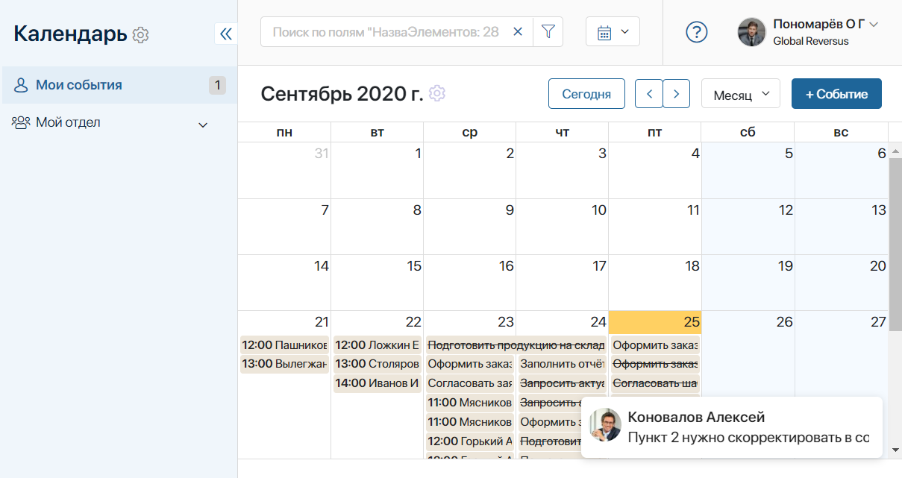
- Если окно браузера с ELMA365 свёрнуто, в правом нижнем углу экрана отобразится push-уведомление.
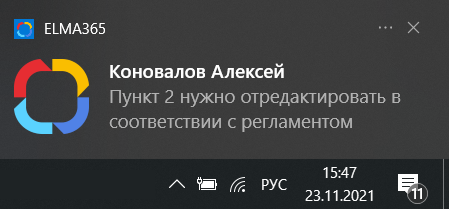
начало внимание
Вы будете получать push-уведомления только в том случае, если разрешите ELMA365 отправлять вам их. Подробнее о настройке читайте в статье «Оповещения».
конец внимание
- Вы увидите счётчик новых сообщений:
- в разделе Сообщения справа от имени вашего собеседника;
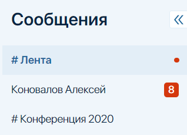
- в левом меню на значке конверта раздела Сообщения.
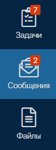
начало внимание
Счётчик рядом со значком конверта не показывает, сколько новых сообщений вы получили. Он указывает на количество чатов или каналов, в которых есть непрочитанные записи.
конец внимание
Беззвучный режим
Чтобы не получать уведомления о новых сообщениях, переключите чат в беззвучный режим. Для этого перейдите в окно чата и в правом верхнем углу нажмите кнопку Уведомления.
Пригласить собеседника
В чат можно пригласить других коллег, чтобы совместно обсудить вопрос, скоординировать планы или поделиться информацией. Для этого в правом верхнем углу чата нажмите кнопку Добавить участника и в открывшемся окне выберите пользователей. Подробнее читайте в статье «Групповой чат».
Поиск по чатам
Чтобы быстро найти нужный чат, начните вводить имя или фамилию пользователя в строке поиска в разделе Сообщения. Под строкой появится выпадающий список с подсказками. Нажмите на имя человека, чтобы перейти в чат.
— отобразить список доступных линий. Этот значок отобразится, если в системе созданы линии.
— показать список всех доступных для вас каналов и чатов.
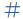— отобразить список доступных каналов.
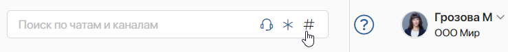
Чтобы найти определённое сообщение в чате, используйте строку поиска. Введите фразу или слово, которое хотите найти и в выпадающем списке выберите опцию Искать в текущем чате.
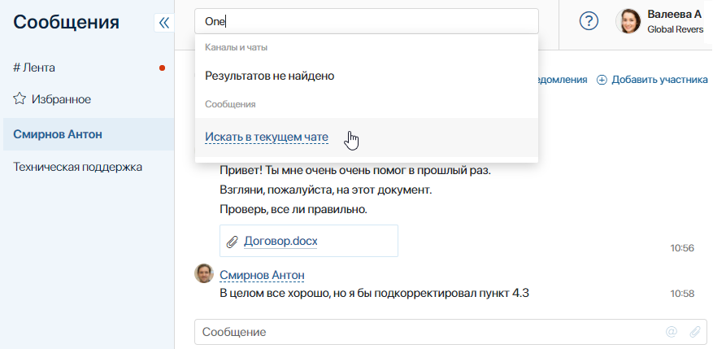
Найденные соответствия выделяются тёмно-желтым цветом. Чтобы перейти к следующему соответствию, воспользуйтесь кнопками навигации, которые появятся в правом углу поисковой строки.
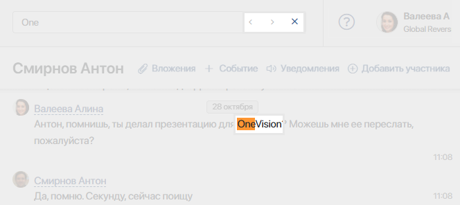
Создать событие из чата
Вы можете быстро создать событие для всех участников чата или канала. Для этого в правом верхнем угу чата нажмите кнопку + Событие.
В открывшемся окне заполните параметры события. Обратите внимание, что в поле Участники автоматически добавлены все участники чата или канала.
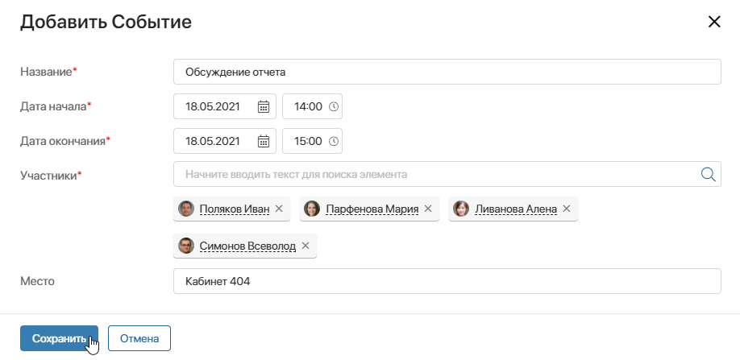
После сохранения запланированное событие появится в личных календарях участников и #ленте сообщений.
Как скрыть чат
Неактуальный для вас чат можно скрыть из списка чатов и каналов. При этом он будет доступен другим участникам. Как только ваш коллега напишет новое сообщение, чат снова появится в вашем списке.
Чтобы убрать чат из списка, нажмите на имя собеседника правой кнопкой мыши и выберите опцию Скрыть чат.
Добавить чат в избранное
Если у вас активирована лента по объектам, вы можете переместить чат в список важных. Для этого нажмите на него правой кнопкой мыши и выберите Добавить в Избранное.
Чтобы исключить чат из избранного, в его контекстном меню выберите Удалить из Избранного.